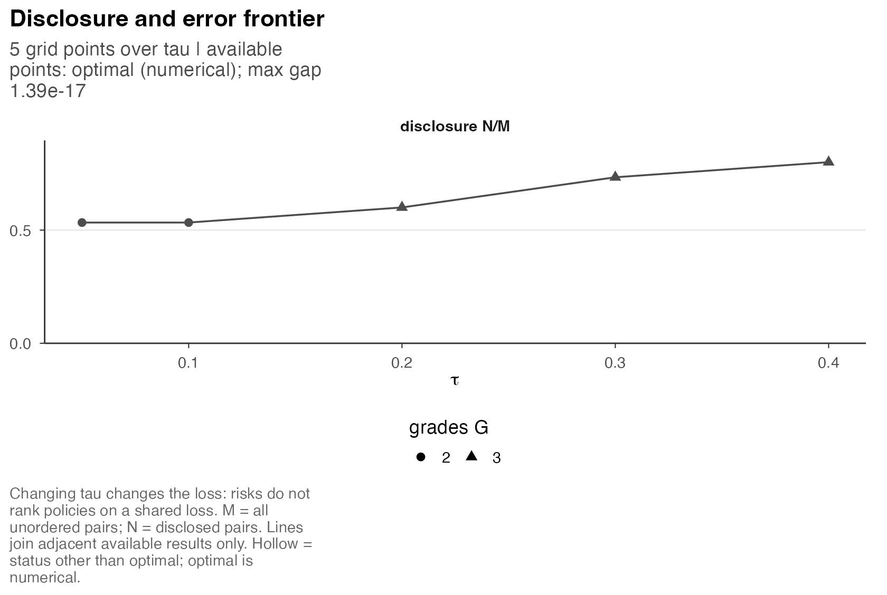

Computing grades and choosing settings
Source:vignettes/m5-computing-grades.Rmd
m5-computing-grades.RmdA grading problem is specified by an action family and an objective. The family determines the admissible reports, and the objective orders them by their expected loss. An algorithm searches this family and returns a report together with numerical information about its optimality. Changes to these three components have distinct implications.
We first consider a single criterion and then introduce criterion protections and minimax objectives. Enumeration of a complete three-entity law illustrates how restrictions affect the solution. Other tables and the figure use prepared HiGHS results. The article build requires neither an optimizer nor dynamic programming; optional calculations are specified at the end. Posterior ranking, grades, and loss defines the loss, and Figures and sensitivity analysis describes the corresponding applied analysis.
Capped and exact-count action families
Grade 1 has highest reporting priority. Different grades publish a
direction; the same grade withholds a comparison. G_max
limits the number of occupied grades. A cap of three permits one, two,
or three grades. exact_G = 3 instead requires three
nonempty grades and must not exceed G_max or the number of
entities. An exact count greater than one excludes the all-withheld
report.
Increasing a grade cap enlarges the action family, so the exact minimum of a fixed loss cannot increase. In contrast, exact-count families are disjoint, and increasing the required count from two to three can either increase or decrease minimum risk. Both changes concern the decision problem rather than computational effort. The action-family derivation gives the relevant set inclusions.
Consider the finite law from M1, whose complete states have masses 12/20, 3/20, 3/20, and 2/20. These probabilities specify the joint law rather than an empirical distribution of draws. At , the risk of every ordered partition is obtained by summing the state-specific wrong-direction losses.
states <- rbind(c(A=3, B=2, C=1), c(A=3, B=1, C=2),
c(A=2, B=3, C=1), c(A=1, B=2, C=3))
mass <- c(12L, 3L, 3L, 2L)
actions <- as.matrix(expand.grid(A=1:3, B=1:3, C=1:3))
keep <- apply(actions, 1, function(g)
identical(sort(unique(as.integer(g))), seq_len(max(g))))
actions <- actions[keep, , drop=FALSE]
counts <- t(apply(actions, 1, function(g) {
disclose <- outer(g, g, "<")
wrong <- apply(states, 1, function(theta)
sum(disclose & outer(theta, theta, "<=")))
c(G=max(g), N=sum(disclose), E_numerator=sum(mass * wrong))
}))
risk_numerator <- 5 * counts[, "E_numerator"] + 20 * (3 - counts[, "N"])
risk <- risk_numerator / 300
families <- list(
"At most 1" = counts[, "G"] <= 1,
"At most 2" = counts[, "G"] <= 2,
"At most 3" = counts[, "G"] <= 3,
"Exactly 3" = counts[, "G"] == 3,
"Fixed order C, B, A" = actions[, "C"] <= actions[, "B"] &
actions[, "B"] <= actions[, "A"],
"At most 3; q = 0.10" = counts[, "E_numerator"] <= 2 * counts[, "N"],
"Exactly 3; q = 0.10" = counts[, "G"] == 3 &
counts[, "E_numerator"] <= 2 * counts[, "N"]
)
family_table <- do.call(rbind, lapply(names(families), function(name) {
eligible <- families[[name]]
data.frame(Family=name, Reports=sum(eligible),
Minimum=if (any(eligible)) min(risk[eligible]) else NA_real_)
}))
knitr::kable(family_table, digits=4, row.names=FALSE,
col.names=c("Family", "Eligible reports", "Minimum risk"))| Family | Eligible reports | Minimum risk |
|---|---|---|
| At most 1 | 1 | 0.2000 |
| At most 2 | 7 | 0.1833 |
| At most 3 | 13 | 0.1833 |
| Exactly 3 | 6 | 0.2000 |
| Fixed order C, B, A | 4 | 0.2000 |
| At most 3; q = 0.10 | 1 | 0.2000 |
| Exactly 3; q = 0.10 | 0 | NA |
At most three grades retains the two-grade minimum 0.1833; exactly
three forces the risk to 0.2000. The reversed fixed order also excludes
both unrestricted minimizers. That order was deliberately imposed to
illustrate a restriction; this is not evidence that a particular
score-ordering method would choose it. The final two rows introduce the
expected-error budget explained below. NA marks an empty
family, not zero risk or a failed calculation.
Fixed-order and joint optimization
Once an order is fixed, every allowed grade must be a contiguous block of that order. For the additive weighted objective, dynamic programming finds the best cut locations by combining optimal prefix partitions with a final block. The solution is exact for that order and scalar cost calculation. Other orderings are excluded from this search. Establishing global optimality for a candidate obtained from several orders requires a bound covering the larger action family.
The fixed-order recurrence has arithmetic cost after the pair costs and order are available. That mathematical count excludes posterior calculation and order selection; it is not a wall-clock guarantee. The package’s internal DP supports candidate construction. It is not a separate public solve strategy, and its exactness does not transfer to protected or minimax surrogate problems.
The public strategies are "staged" and
"label_mip". The label MIP optimizes integer grade labels
and pair relations jointly under the chosen constraints. The default
staged strategy first builds candidates from orders and local search,
then seeks a lower bound from a linear relaxation. If the gap remains
and the configured size rules permit it, it proceeds to the label MIP
with added valid inequalities. Both strategies target the same declared
problem and validate their released action.
A feasible candidate supplies an upper bound for a minimization problem. A relaxation supplies a lower bound when it contains the entire action family and agrees with the objective on that family. The minimum within a fixed order generally provides an upper bound for unrestricted grading, whereas fractional relaxation solutions generally do not correspond to admissible grade reports.
Error budgets constrain disclosed pairs
For criterion
,
q imposes
The denominator is the number of disclosed pairs, not all pairs. When , the row bounds the posterior expected wrong-direction fraction among those disclosed pairs. It does not bound each pair separately or the probability that the realized error fraction exceeds the budget. These distinctions are derived in the criterion-protection section.
At
,
the count inequality becomes
,
while
remains undefined. Hence the capped family in the example retains the
all-withheld action when q = .10 excludes every disclosed
report. Exactly three grades removes that action and leaves no feasible
report. Restoring withholding would change the requested problem.
Budgets can protect criteria with zero objective weight: constraint rows are not multiplied by those weights. Tightening budgets while holding the law, loss and base family fixed cannot lower its exact minimum when the remaining family is nonempty. It need not preserve the chosen grades or disclosure count. Protections refer to the supplied probabilities; model calibration and coefficient approximation require additional assessment.
Minimax loss and refinement
With several criteria define
Weighted loss minimizes
.
objective = "minimax" instead minimizes
,
with all criteria included unless minimax_criteria selects
a subset. A zero weighted-loss weight does not remove a criterion from
that set. This is the maximum of criterion expectations, not the
expectation of a draw-specific maximum or a separate worst criterion
selected for each pair. Its common loss scale and included criteria are
substantive choices, as the minimax
derivation explains.
The prepared toy results use the same 32 retained IID states of three
fictional entities on two criteria, postrank_toy. These are
draws from a specified normal toy law, so the optimization coefficients
are empirical frequencies. Both reports allow at most three grades and
use
;
weighted loss uses
.
Entity order in the grade vectors is 001, site-B, site C.
fits <- list(Weighted=toy$fit, Minimax=minimax)
comparison <- do.call(rbind, lapply(names(fits), function(name) {
fit <- fits[[name]]
data.frame(Objective=name, Grades=paste(fit$grade, collapse="/"),
N=fit$evaluation$N, Weighted=fit$evaluation$weighted_risk,
Worst=max(fit$evaluation$criterion_risk))
}))
knitr::kable(comparison, digits=4, row.names=FALSE,
col.names=c("Objective", "Grades", "Disclosed", "Weighted risk", "Largest criterion risk"))| Objective | Grades | Disclosed | Weighted risk | Largest criterion risk |
|---|---|---|---|---|
| Weighted | 1/1/2 | 2 | 0.2125 | 0.375 |
| Minimax | 1/1/1 | 0 | 0.2500 | 0.250 |
The weighted report has lower weighted risk but higher maximum criterion risk. Minimax withholds every comparison here; its values are undefined. The table compares two objectives on the same inputs and action family; it does not determine which reporting preferences are substantively appropriate.
The default minimax_refine = "weighted" adds a stage
minimizing the original weighted risk while keeping selected criterion
risks below the first-stage primary value. If some weights are zero, a
further stage uses uniform criterion risk while also preserving the
original weighted result. Weights are not perturbed. With
minimax_refine = "none", the first-stage report is
retained.
The record fit$minimax_refine contains the stage
statuses, caps and released action. Refinement may start from an
unfinished primary solve; its caps need not therefore characterize the
exact minimax-optimal set. The stated lexicographic and Pareto
conclusions depend on the relevant stages and their numerical
tolerances. In this prepared example, refinement was applied and
improved is FALSE. Neither refinement nor a fixed seed
establishes uniqueness or a generally deterministic choice among
minimizers.
Incumbents and optimization bounds
An incumbent is the best valid report found. For an exact feasible action and a valid whole-family lower bound, the mathematical relationship is
The package recomputes the released action’s risk. For minimax it uses that action’s largest included criterion risk, rather than a potentially slack epigraph value. The actual prepared results have these recorded bounds:
bound_table <- do.call(rbind, lapply(names(fits), function(name) {
fit <- fits[[name]]
data.frame(Objective=name, Status=fit$status$normalized,
L=fit$objective$risk_lower_bound, U=fit$objective$risk_upper_bound,
Gap=fit$objective$risk_absolute_gap)
}))
knitr::kable(bound_table, digits=4, row.names=FALSE)| Objective | Status | L | U | Gap |
|---|---|---|---|---|
| Weighted | optimal | 0.2125 | 0.2125 | 0 |
| Minimax | optimal | 0.2500 | 0.2500 | 0 |
These optimal labels are numerical conclusions for the
recorded coefficient arrays. Both report
numerical_certification = FALSE. In the weighted toy, the
reported lower bound exceeded recomputed risk by 2.78e-17 and was
clamped within the objective tolerance, with a retained warning. Its
zero displayed gap must be read with that qualification.
For weighted problems, the raw objective is
,
with
.
Thus a raw absolute gap must be divided by
.
A relative gap on the centered raw objective generally differs from one
on risk. Interpretation of risk_absolute_gap depends on its
bound source and controls; an unspecified percentage does not quantify
posterior regret. The bound
and normalization discussion states the mathematical premises.
The recorded states have the following interpretations. The table summarizes the output fields rather than additional solver executions.
| Recorded state | What to inspect |
|---|---|
optimal |
Validated grades, usable whole-problem bounds, gap controls and numerical warnings. |
feasible_not_certified |
A feasible grade is available, but the recorded bounds do not establish the requested optimality conclusion. |
time_limit |
Availability of a validated grade must be established separately from the time-limit status. |
| No validated grade | Grades and action risk are unavailable. This is different from a valid all-withheld report. |
infeasible or a numerical issue |
Assessment requires the declared action family and diagnostics. Relaxing a grade count or budget changes the problem. |
A missing bound gives an unavailable gap. An inconsistent bound can be rejected even when a feasible action survives validation. Bounds concern optimization of the coefficients actually supplied. They do not prove posterior calibration, coefficient accuracy, or the uniqueness of an optimum.
Comparisons across decision settings
The prepared cost path uses the six-site, two-criterion Gaussian law from Getting started. The posterior, equal criterion weights and cap of three grades are held fixed, so variation along the path is confined to the withholding cost.
postrank_plot_frontier(frontier, panels="disclosure")
Open full-size figurePrepared HiGHS results for six fictional sites under equal criterion weights and a three-grade cap. The vertical axis is disclosed pairs divided by all 15 pairs. Lines join sampled costs; they do not locate every transition.
Disclosure increases from 8 to 12 of 15 pairs across these sampled
costs. All points have recorded numerical optimal status;
the largest absolute gap is 1.39e-17. Under exact minimization with a
fixed family, disclosure is nondecreasing in
.
A sparse numerical grid is not the complete frontier or a proof that
every transition was found. Risk values at different costs also use
different losses. The frontier
conditions explain why changing a cap or budget at the same time
changes the comparison.
Input capabilities further restrict which settings are available.
Ordinary draw and exact finite-law inputs support the validated
exact-count, protection and minimax modes. Gaussian, shared-state
mixture and direct probability inputs currently support weighted
at-most-G native joint problems. Fixed-order
postrank_cuts() additionally accepts an exact count for
Gaussian and mixture coefficients; that narrower dynamic program does
not enable exact-count joint optimization. Direct-probability cuts
remain at-most-G. The separate equality-neutral domain uses its own
weighted at-most-G label-MIP route. A mathematical extension in the
theory text is not an implemented combination; see Posterior inputs and pairwise
probabilities and True ties
and withheld comparisons.
Settings and computational controls
Typed settings use tau = .25, G_max = 4,
and weighted loss by default. These values define the reporting problem
and should be stated in the analysis. The default controls specify a
60-second budget, one thread, seed 1304, staged search, absolute risk
gap 1e-8 and relative gap zero. Construction, validation
and refinement add overhead, so the time budget is not a strict limit on
total elapsed time.
An explicit backend takes precedence over
options(postrank.backend=); if neither is supplied, Gurobi
is the default. HiGHS requires explicit selection. Unavailable, failed,
or timed-out backends are not silently replaced. The following optional
calculation applies criterion protection to a supported draw input:
policy <- postrank_settings(weights=c(need_A=.6, need_B=.4),
tau=.25, G_max=3L, q=c(need_B=.30))
fresh <- postrank(postrank_toy, settings=policy, backend="highs",
control=postrank_control(time_limit=30, absolute_risk_gap=1e-8),
fragility=FALSE)
fresh$fit$status
fresh$fit$objective[c("risk_lower_bound", "risk_upper_bound", "risk_absolute_gap")]Additional computation or a smaller stopping gap can reduce optimization uncertainty. The adequacy of the posterior producer and the justification for the reporting preferences require separate assessment. Monte Carlo uncertainty and diagnostics considers uncertainty in the estimated comparison probabilities.